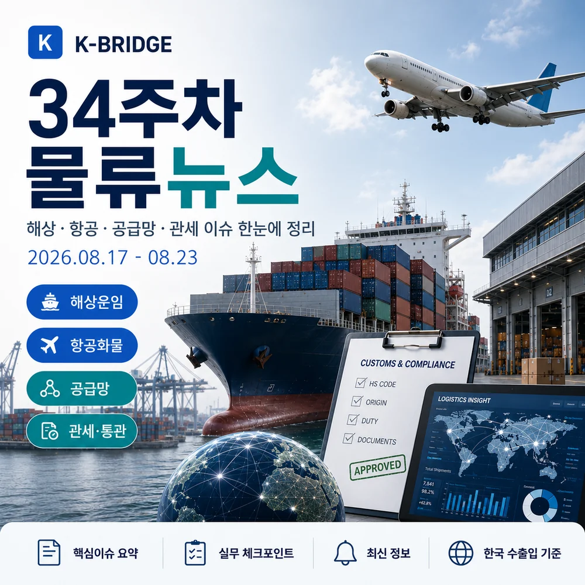
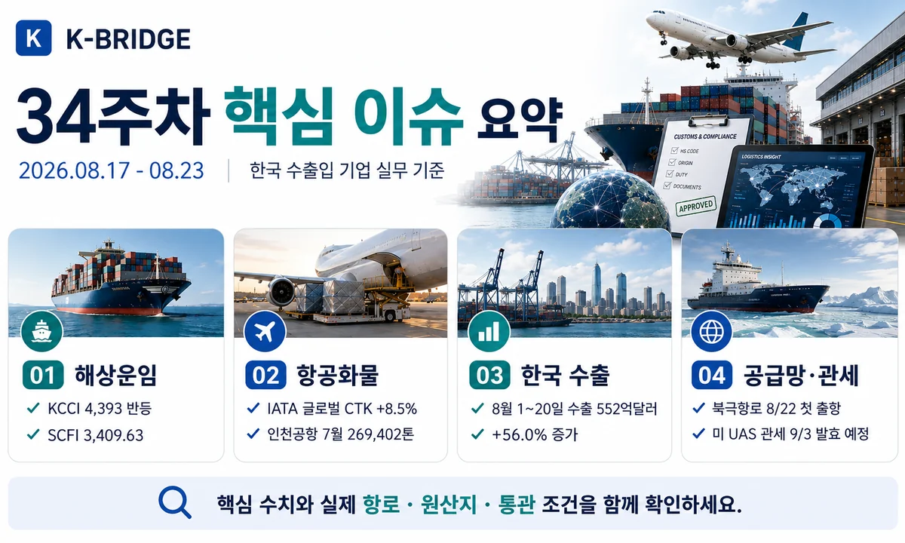
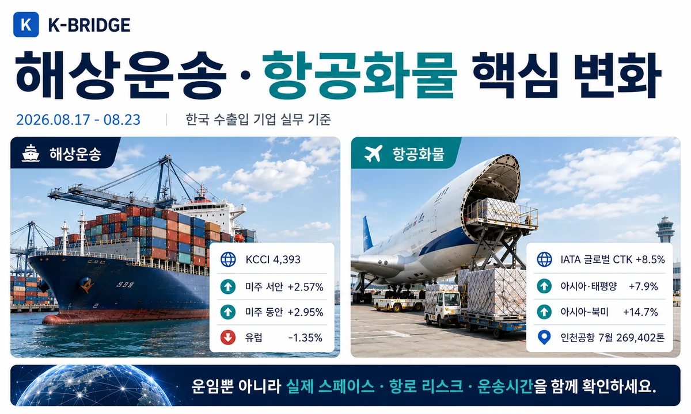
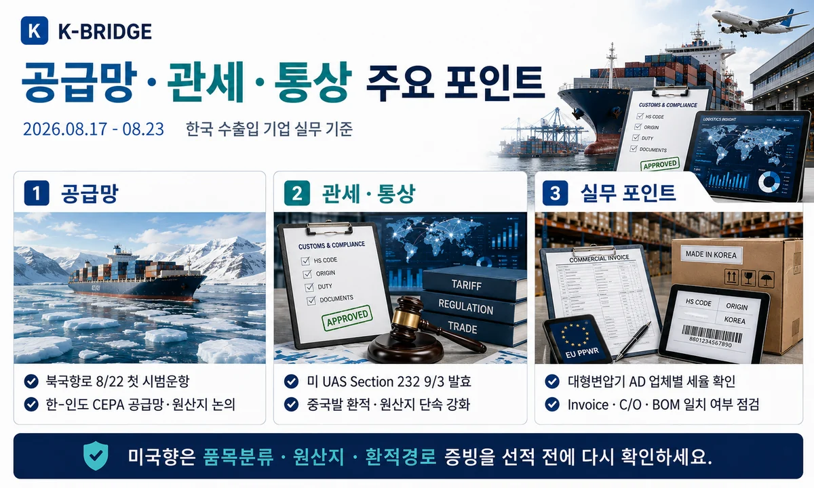
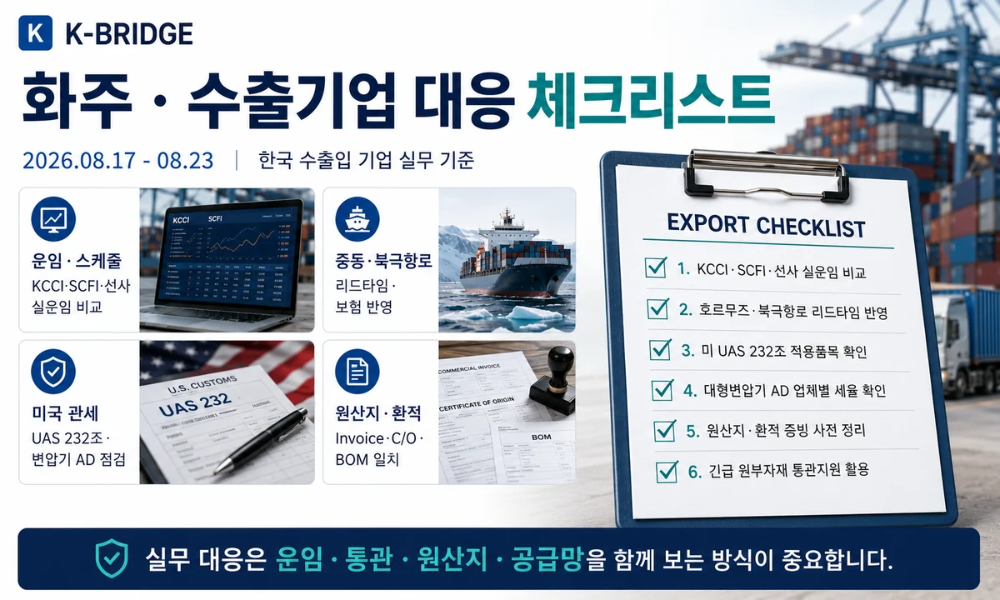

34주차 핵심 요약
KCCI는 4,393으로 전주 대비 약 2.45% 상승했고, SCFI도 3,409.63으로 4주 연속 상승 흐름을 이어갔습니다. 한국의 8월 1~20일 수출은 552억달러(+56.0%)로 8월 기준 역대 최대를 기록했습니다. 반면 호르무즈는 8월 20일 가시 통항 선박이 7척에 그쳤고, 한국은 8월 22일 첫 북극항로 컨테이너선 시범운항을 시작했습니다. 미국은 UAS Section 232와 환적·원산지 단속을 강화하고 있어 미국향 수출은 품목분류와 공급망 증빙을 선적 전에 확인해야 합니다.

1. 34주차 시장 한눈에 보기
34주차는 미주·중남미 중심의 컨테이너 운임 상승과 한국 수출 호조가 이어진 반면, 중동 해상교통과 미국의 원산지·관세 규제는 더 복잡해졌습니다. 평균 운임만 보기보다 실제 항로, 스페이스, 원산지 증빙, 미국 수입자의 인증요건을 함께 확인하는 것이 중요합니다.
| 지표 | 34주차 기준 | 변화 | 실무 해석 |
|---|---|---|---|
| KCCI | 4,393 | 8/18 · +2.45% | 미주·호주·중남미 강세, 유럽 약세 |
| SCFI | 3,409.63 | 8/21 · +1.62% | 미국·중남미 강세, 유럽·지중해 하락 |
| 한국 수출 | 552억달러 | 8/1~20 · +56.0% | 반도체 260억달러로 기간 기준 역대 최대 |
| 인천공항 화물 | 269,402톤 | 2026년 7월 | 전자·고부가 항공화물 기반 견조 |
| IATA 글로벌 CTK | +8.5% | 6월 전년 대비 | 8/23 현재 최신 공식 글로벌 월간치 |
| 북극항로 | 8/22 출항 | 45일 왕복 시범운항 | 대체항로 실증 단계, 제재·빙해·보험 확인 |
2. 해상운송·글로벌 항로
KCCI 4,393 - 미주·중남미 중심 상승
한국해양진흥공사 시계열 자료에서 8월 18일 KCCI는 4,393으로 전주 4,288보다 약 2.45% 상승했습니다. 미주 서안 6,906(+2.57%), 미주 동안 9,982(+2.95%), 호주 4,397(+5.70%), 중남미 동안 6,677(+5.32%), 중남미 서안 5,531(+12.88%)이 상승한 반면 유럽 4,741(-1.35%)과 지중해 5,611(-1.60%)는 하락했습니다.
SCFI 3,409.63 - 4주 연속 상승, 미국·중남미가 지수 지지
상하이해운거래소 기준 8월 21일 SCFI는 3,409.63으로 전주 3,355.24보다 54.39포인트, 1.62% 상승했습니다. 미주 항로와 남미·중남미·인도 항로가 강세를 보인 반면 유럽·지중해는 하락해 항로별 격차가 확대됐습니다.
호르무즈 8월 20일 가시 통항 7척 - 중동 해상 리스크 지속
Reuters가 Kpler 자료를 인용한 8월 21일 보도에서 8월 20일 호르무즈 해협을 통항한 가시 상품선은 7척으로 전날의 절반 수준이었습니다. 해당 집계에는 VLCC와 LNG선이 없었으며, 중동발 원유·가스·화학품의 보험료와 ETA 변동성은 계속 높은 수준으로 봐야 합니다.
PanStar Acro 8월 22일 출항 - 한국 첫 북극항로 컨테이너선 시범운항
해양수산부는 2,758TEU급 PanStar Acro가 8월 22일 부산에서 출항해 약 45일간 북동항로 왕복 시범운항에 들어갔다고 밝혔습니다. 새로운 유럽 대체항로 가능성을 실증하는 프로젝트이지만, 러시아 연안 통과와 서방 제재, 빙해·보험·구난 인프라를 함께 검토해야 합니다.

3. 항공화물 시장
인천공항 7월 화물 269,402톤 - 한국 항공화물 기반 수요 견조
인천국제공항 공식 통계에서 2026년 7월 화물 처리량은 269,402톤으로, 도착 137,662톤과 출발 131,740톤으로 집계됐습니다. 반도체·전자부품·바이오·긴급화물 중심의 항공운송 수요는 계속 높은 수준을 유지하고 있습니다.
IATA 최신 공식치 - 글로벌 +8.5%, 아시아·태평양 +7.9%
8월 23일 기준 IATA가 공개한 최신 글로벌 월간 항공화물 자료는 6월치입니다. 글로벌 CTK는 전년 대비 8.5%, 아시아·태평양은 7.9%, 아시아-북미는 14.7%, 유럽-아시아는 7.1% 증가했습니다. 반면 중동-아시아와 유럽-중동은 지정학 리스크 영향으로 감소해 경유 노선별 차이가 컸습니다.
4. 한국 수출·공급망
8월 1~20일 수출 552억달러 - 전년 대비 56.0% 증가
관세청 잠정치에서 8월 1~20일 수출은 552억 700만달러로 전년 동기 대비 56.0% 증가했고, 수입은 412억 3,100만달러(+19.0%), 무역수지는 약 139억 7,500만달러 흑자를 기록했습니다. 반도체 수출은 260억달러로 같은 기간 기준 역대 최대였습니다.
거제·통영 집중호우 피해 수출입기업 - 관세·통관 긴급지원
관세청은 8월 20일 집중호우 피해기업에 관세 납부기한 최대 1년 연장, 연말까지 관세조사 유예, FTA 원산지검증 보류·연기, 긴급 원부자재 신속통관, 수출물품 항공기·선박 적재기간 최대 1년 연장 등의 종합지원을 발표했습니다.
한-인도 CEPA 제13차 개선협상 - 공급망·원산지까지 6개 분야 논의
산업통상부는 8월 19~21일 서울에서 한-인도 CEPA 제13차 개선협상을 개최했습니다. 상품·서비스·원산지·무역기술장벽·공급망·산업협력 6개 분야를 집중 논의해 인도향 수출기업에는 향후 관세와 원산지 기준 변화 가능성을 점검할 필요가 있습니다.

5. 관세·통상·해외 규제
미국 UAS Section 232 - 9월 3일 일부 품목 관세 발효 예정
미 백악관은 8월 13일 UAS(무인항공기 시스템)와 일부 부품에 Section 232 조치를 발표했습니다. 일부 25kg 초과 UAS·열화상 통합 UAS·도킹스테이션 등은 100%, 일부 25kg 이하 UAS는 25%의 기본 조치가 규정됐습니다. 한국·일본·EU 등 지정 파트너는 총세율을 15% 이하로 제한하는 조항이 있으나, 핵심 부품과 기술이 적격 국가산이라는 수입자 인증 요건을 충족해야 합니다.
한국산 대형 전력변압기 미국 반덤핑 최종판정 - 업체별 세율 차이
미 상무부의 8월 14일 최종판정에서 한국산 대형 전력변압기(LPT) 반덤핑 마진은 HD현대일렉트릭 0.00%, 일진전기 0.00%, LS ELECTRIC 4.32%, 효성중공업 4.32%로 결정됐습니다. 미국향 전력기기 수출은 동일 품목이라도 제조·수출업체별 현금예치율과 적용범위를 확인해야 합니다.
미국, 중국발 우회수출·환적 단속 강화 - 원산지 서류 중요도 상승
백악관은 8월 13일 'The Great Transshipment Scam' 보고서를 공개하며 고율 관세 대상 상품의 우회 환적과 원산지 허위신고에 대한 단속 강화를 공식화했습니다. 미국향 수출기업은 단순 선적국 변경보다 실제 생산공정과 실질적 변형, BOM, Invoice, C/O, 원산지 표시가 서로 일치하는지 확인해야 합니다.
통상 주의: 미국 UAS Section 232와 대형변압기 AD는 제품명만으로 세율을 판단할 수 없습니다. HTS/HS CODE, 제조사, 원산지, 핵심부품·기술의 공급국, 수입자 인증조건을 실제 거래 기준으로 확인해야 합니다.
6. 이번 주 추가 물류 동향

7. 화주·수출기업 대응 체크리스트
- 해상운임: KCCI·SCFI와 실제 선사 견적을 함께 비교하고 미주·중남미는 스페이스를 조기에 확인합니다.
- 호르무즈: 중동 연계 화물은 War Risk, 통항 가능성, ETA 버퍼, 대체 항로를 항차별로 확인합니다.
- 북극항로: 시범운항 단계이므로 일반 정기서비스처럼 판단하지 말고 제재·빙해·보험·항만조건을 확인합니다.
- 항공화물: 전자·반도체·긴급화물은 메인편과 대체편을 동시에 확보합니다.
- 미국 UAS: 9월 3일 발효 전 HTS·제품중량·열화상 장비·도킹스테이션·핵심부품 원산지를 확인합니다.
- 미국 전력기기: 대형변압기 AD는 업체별 세율이 다르므로 제조사·수출자 기준 적용률을 확인합니다.
- 원산지·환적: Invoice, C/O, BOM, 생산공정, 원산지 표시를 일치시키고 단순 환적을 원산지 변경으로 오인하지 않도록 합니다.
- FTA·통관: 인도 CEPA 개선협상과 국내 호우피해기업 통관지원 등 최신 제도를 실제 거래에 반영합니다.
8. 자주 묻는 질문
Q. 2026년 34주차 KCCI는 얼마인가요?
Q. 34주차에 가장 중요한 해상운송 리스크는 무엇인가요?
Q. 미국 UAS Section 232의 한국산 15% 상한은 자동 적용되나요?
운임·항로·관세·원산지를 한 번에 확인하세요
케이브릿지는 해상·항공·통관·국내운송을 연결해 선복과 운임뿐 아니라 원산지·관세 조건, 해외 통상규제와 도착 리스크를 함께 검토합니다.